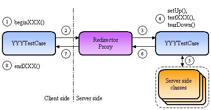
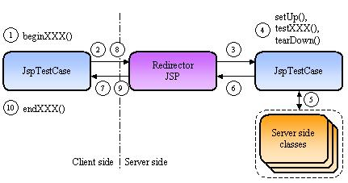

|
Last update : August 31 2002
Doc for : v1.4.1
About
What is Cactus ?
News
Changes
Features/Status
Goals
Roadmap/Todo
Contributors
Contributing
Cactus Users
Tested on ...
License
Downloads
Downloads
Documentation
How it works ?
Getting Started
Mock vs Container
Javadocs
FAQ
Howto Guides
Classpath Howto
Config Howto
Migration Howto
TestCase Howto
Jsp Howto
Runner Howto
Security Howto
Ant Howto
HttpUnit Howto
Sample Howto
EJB Howto
IDE Howto
Tomcat Howto
JUnitEE Howto
Support
Bug database
Mailing list
Misc.
Why the name ?
Logo Challenge
Resources
Test Coverage
Stats
Developers
CVS
Coding Conventions
Build results
Release Checklist
|
| How it works |
Click here for a UML
sequence diagram.

 |
Cactus provides several TestCase classes that extends the
JUnit Testcase and it also provides several kind of
redirectors (Servlet Redirector, JSP Redirector, ...). The diagram
above is a generic diagram which serves to explain the principles.
You'll find details for a specific redirector proxy in the next
section.
|
|
YYYTestCase = ( ServletTestCase | FilterTestCase | JspTestCase )
|
|
XXX is the name of the test case. Each YYYTestCase class contains
several test cases.
|
Let's go through the different steps to understand how it works. Here
is what happens for each testXXX() method in your
test case class (derived from YYYTestCase) :
-
The JUnit Test Runner calls a
YYYTestCase.runTest()
method. This method looks for a
beginXXX(WebRequest) method and executes it if
one is found. This is executed on the client side (i.e. not in a
server engine). The WebRequest
parameter passed to the beginXXX() method is used
to set the HTTP headers, the HTTP parameters, ... that will be
sent in step 2 to the Redirector proxy.
-
The
YYYTestCase.runTest() method then opens an HTTP
connection to the Redirector proxy. All the parameters set up
in the beginXXX() method are sent in the HTTP request
(HTTP headers, HTTP parameters, ...)
-
The Redirector proxy acts as a proxy on the server side for your
test case class. It means that your test case class is instantiated
twice : once on the client side (by the JUnit Test Runner) and once
on the server side (by the Redirector proxy). The client side
instance is used for executing the
beginXXX() and endXXX() methods (see
steps 1 and 8) and the server side instance is used for executing
the testXXX() methods (see step 4). The Redirector
proxy does the following :
-
creates an instance of your test class using reflection. It
then sets specific implicit objects (which are class
variables of
YYYTestCase). These implicit objects
depend on the redirector proxy (see next section).
-
creates instances of Cactus wrappers for some server objects
(
HttpServletRequest, ServletConfig,
ServletContext, ...). This is to be able to
to override some methods in order to return simulated values.
For example, the Cactus framework can simulate an URI (i.e.
act as if this URI was called instead of the Redirector proxy
URI). Thus, the getServerName(),
getServerPort(),
getRequestURI(), ... methods return values based
on the simulated URI (if there is any defined by the user).
-
creates an HTTP Session if the user has expressed the wish
(using the
WebRequest.setAutomaticSession(boolean)
code in the beginXXX() method. By default a session
is always created) and the redirector fills by reflection the
session implicit object.
-
The
setUp(), testXXX()
and tearDown() methods of your test class are executed
(in that order). They are called by the Redirector proxy using
reflection. Of course, setUp() and
tearDown() are optional (same as in JUnit).
-
Your
testXXX() method calls your server
side code to test, executing the test and using the JUnit assert API
to assert the result (assert(),
assertEquals(), fail(), ...)
-
If the test fails, your
testXXX() methods
throws exceptions which are caught by the Redirector proxy.
-
If an exception has been raised, the Redirector proxy returns the
information about the exception (it's name, class, stack trace) back
to the client side. Information about the exception will then be
printed by JUnit in it's Test Runner console.
-
If no exception occurred, the
YYYTestCase.runTest()
method looks for an endXXX(org.apache.cactus.WebResponse)
or endXXX(com.meterware.httpunit.WebResponse) (this
signature is used for HttpUnit
integration) method and executes it if found. At this stage,
you have the opportunity to check returned HTTP headers, Cookies and
the servlet output stream in the endXXX() method, again
using JUnit asserts and helper utility classes provided by Cactus.
| Redirector Proxies |
Cactus provides 3 implementations of Redirector Proxies
(see the TestCase Howto
tutorial for more details on how to use these redirectors) :
-
A Servlet Redirector. This redirector is a servlet that
should be used for unit testing servlet methods or any java class
that uses servlet objects (
HttpServletRequest, ...)
-
A JSP Redirector. This redirector is a JSP page that
should be used for unit testing server code that need access to
JSP implicit objects (
PageContext, ...). The JSP
Redirector should be used to unit test custom Tag libraries.
-
A Filter Redirector. This redirector is a Servlet Filter
that should be uses for unit testing Servlet Filters or any java
class that uses filter objects (
FilterConfig, ...).
| Servlet Redirector Proxy |
The client side opens 2 HTTP connections to the Servlet redirector.
Once to execute the tests and retrieve the servlet output stream and
a second time to get the test result. This is to be able to get
the exception data (message, stack trace, ...) if the test failed.
The test results are stored in a variable which is put in the
ServletContext and then retrieved on the second HTTP
connection.
|
| JSP Redirector Proxy |

The client side opens 2 HTTP connections to the JSP redirector.
Once to execute the tests and retrieve the servlet output stream and
a second time to get the test result. This is to be able to get
the exception data (message, stack trace, ...) if the test failed.
The test results are stored in a variable which is put in the
ServletContext and then retrieved on the second HTTP
connection.
|
| Filter Redirector Proxy |
The client side opens 2 HTTP connections to the Filter redirector.
Once to execute the tests and retrieve the servlet output stream and
a second time to get the test result. This is to be able to get
the exception data (message, stack trace, ...) if the test failed.
The test results are stored in a variable which is put in the
ServletContext and then retrieved on the second HTTP
connection.
|
|
|
|
|